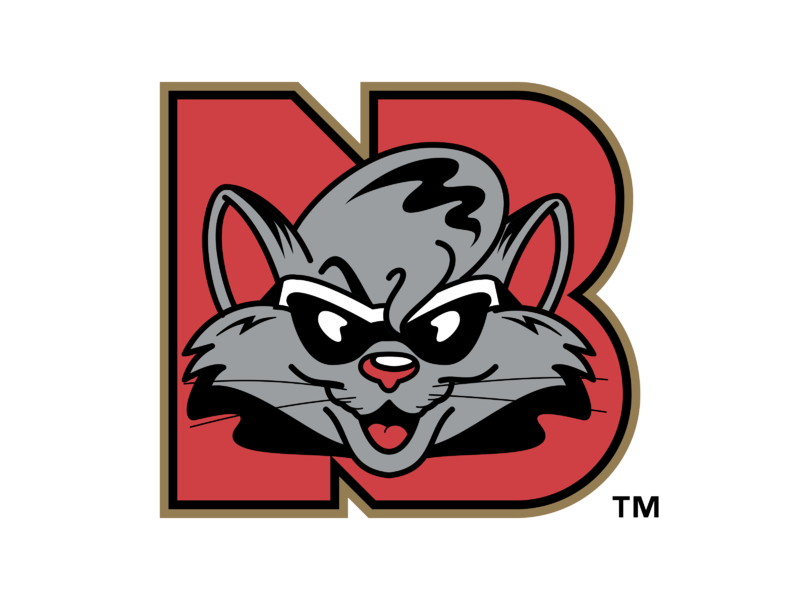

Who Are The Rock Cats?

The New Britain Rock Cats were a minor league baseball team that competed in the Eastern League. They were the Double-A affiliate of the Boston Red Sox for 12 years, the Minnesota Twins for 20 years and the Colorado Rockies for one. They played their home games at New Britain Stadium in New Britain, Connecticut. The team moved to Dunkin' Donuts Park in nearby Hartford before the 2016 season, becoming the Hartford Yard Goats.
Click To Find Out More